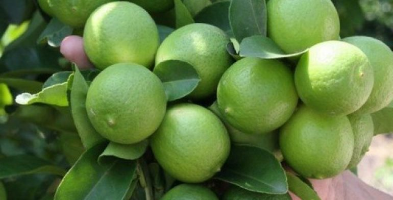
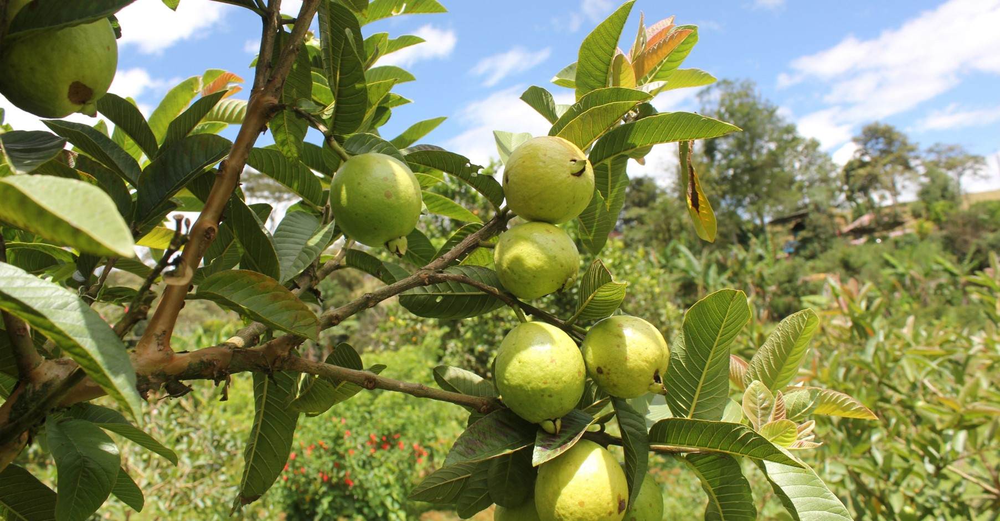
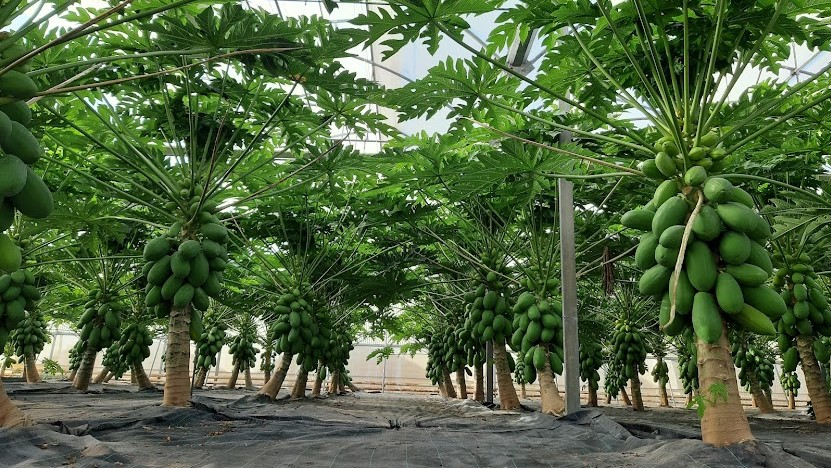
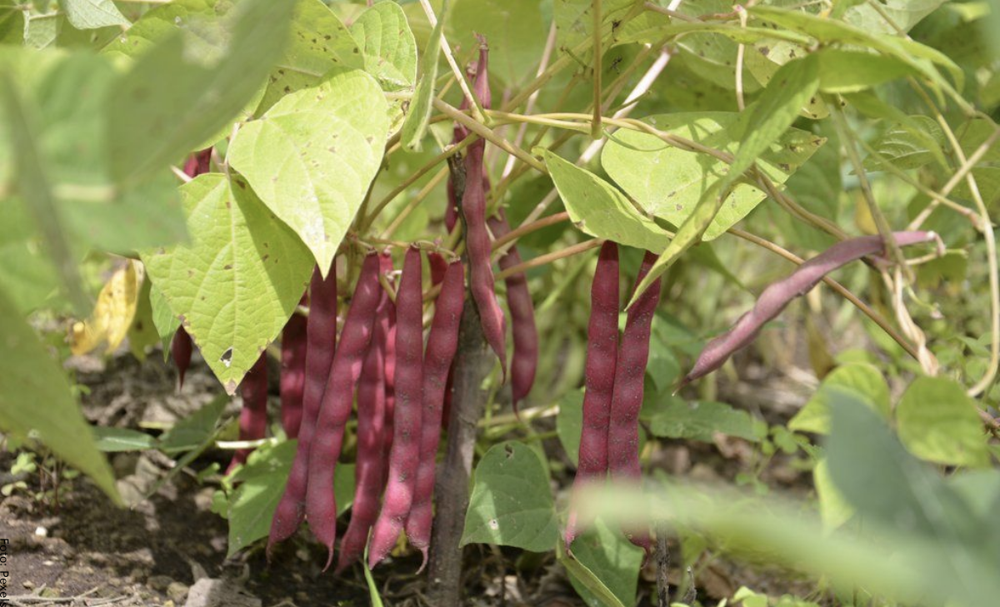
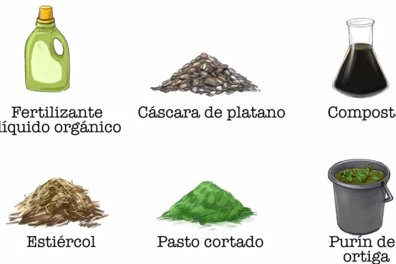
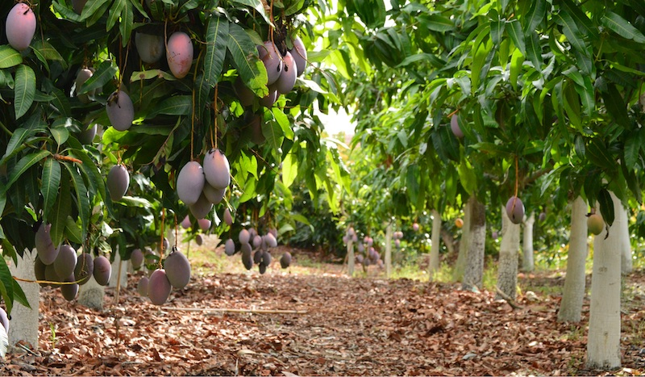

Indice
| Sección | Enlace |
|---|---|
| Introducción | Ir a Introducción |
| Fertilizacion en la Yuca | Ir a la imformacion |
| Fertilizacion en el Platano | Ir a la imformacion |
| Fertilizacion en el Ñame | Ir a la imformacion |
| Fertilizacion en el Limon | Ir a la imformacion |
| Fertilizacion en el Maiz | Ir a la imformacion |
| Fertilizacion en el Guayaba | Ir a la imformacion |
| Fertilizacion en el Sandia | Ir a la imformacion |
| Fertilizacion en la Papaya | Ir a la imformacion |
| Fertilizacion en el Frijol | Ir a la imformacion |
| Fertilizacion en el Tomate | Ir a la imformacion |
| Fertilizacion en el mango | Ir a la imformacion |
Fertilizantes y abonos
Los fertilizantes son insumos agrícolas esenciales que se utilizan para aumentar el rendimiento de los cultivos. Actúan como una fuente de nutrientes que las plantas necesitan para crecer de manera saludable . Estos nutrientes pueden ser de origen mineral, vegetal o sintético, y se aplican al suelo para mejorar su fertilidad.
Funcion de los fertilizantes
Los fertilizantes proporcionan nutrientes primarios como el nitrógeno, fósforo y potasio, que son cruciales para el desarrollo vegetativo y la producción de frutos en las plantas . Además, ayudan a restaurar los nutrientes que se agotan en el suelo debido al cultivo continuo.
En este documento, se abordará de manera detallada el tema de los fertilizantes y abonos utilizados en diversos cultivos. Se explorarán las necesidades específicas de nutrientes para cada uno de ellos, incluyendo yuca, plátano, ñame, papaya, maíz, limón, tomate, guayaba, frijol y sandía. A través de esta información, se busca proporcionar una guía útil para optimizar la producción agrícola y mejorar la salud de los cultivos.
Yuca: Fertilizantes y abonos

La fertilización de la yuca es fundamental para asegurar un buen rendimiento y calidad del cultivo. A continuación, se detallan las necesidades de fertilizantes, el proceso de aplicación, el mejor momento para aplicarlos y los métodos adecuados.
Necesidades de Fertilizantes
La yuca requiere principalmente nitrógeno (N), fósforo (P) y potasio (K). Se recomienda aplicar fertilizantes como la urea para el nitrógeno, fosfato diamónico (DAP) para el fósforo y cloruro de potasio para el potasio. Además, el uso de abonos orgánicos como el bocashi o la gallinaza puede enriquecer el suelo y mejorar la fertilidad .
Proceso de Aplicación
El proceso de aplicación de fertilizantes debe ser planificado. Se sugiere aplicar el 60% del fertilizante antes de la siembra y el 40% restante durante el crecimiento de la planta, especialmente en el momento de la formación de los tubérculos. Esto asegura que la planta tenga acceso a los nutrientes en las etapas críticas de su desarrollo.
Mejor Momento para Aplicar
El mejor momento para aplicar fertilizantes es antes de plantar y durante las primeras semanas después de la siembra. Esto permite que los nutrientes estén disponibles cuando la planta comienza a desarrollarse . También es importante realizar un análisis de suelo previo para ajustar las dosis de fertilizantes según las necesidades específicas del terreno.
Métodos de Fertilización Adecuados
Existen varios métodos de fertilización que se pueden utilizar:
- Fertilización al voleo: Consiste en esparcir el fertilizante sobre la superficie del suelo antes de la siembra.
- Fertilización en surcos: Se aplica el fertilizante en los surcos donde se sembrará la yuca, asegurando un contacto más directo con las raíces.
- Fertilización foliar: En algunos casos, se pueden aplicar fertilizantes líquidos directamente sobre las hojas para corregir deficiencias nutricionales rápidamente.
En resumen, una adecuada fertilización de la yuca, combinando fertilizantes químicos y orgánicos, junto con una correcta planificación de la aplicación, es clave para maximizar el rendimiento del cultivo.
Platano: Fertilizantes y abonos.

El plátano es una fruta tropical muy popular y consumida en todo el mundo. Su cultivo requiere de cuidados específicos para asegurar un crecimiento sano y una producción abundante. Uno de los aspectos más importantes a tener en cuenta es el abono utilizado, ya que proporciona los nutrientes esenciales para el desarrollo de la planta.
Existen diferentes tipos de abonos disponibles en el mercado, pero no todos son adecuados para el cultivo del plátano. El mejor abono para esta planta debe ser rico en nutrientes como el potasio, el fósforo y el nitrógeno, que son fundamentales para su crecimiento y desarrollo. Además, es recomendable utilizar abonos orgánicos, ya que benefician tanto a la planta como al medio ambiente.
Entre los abonos orgánicos más recomendados para el cultivo del plátano se encuentran el compost, el estiércol de animales y los fertilizantes naturales a base de plantas. Estos abonos aportan nutrientes de manera gradual y constante, lo que permite un crecimiento equilibrado de la planta. Además, mejoran la estructura del suelo y estimulan la actividad de los microorganismos beneficiosos.
Es importante recordar que el abono debe aplicarse de manera adecuada para obtener los mejores resultados. Se recomienda realizar una aplicación superficial alrededor de la planta, evitando el contacto directo con el tallo. Además, es conveniente seguir las indicaciones del fabricante y no exceder las dosis recomendadas.
Tipo de Abono
Existen diferentes tipos de abono que se pueden utilizar para el cultivo de plátanos. Sin embargo, el abono orgánico es generalmente considerado como el mejor opción. El abono orgánico se compone de materiales naturales, como estiércol, compost y residuos vegetales, que aportan nutrientes esenciales y ayudan a mejorar la estructura del suelo.
Además de ser más respetuoso con el medio ambiente, el abono orgánico también tiene ventajas para la salud del suelo a largo plazo, promoviendo la biodiversidad y reduciendo la dependencia de químicos sintéticos.
Aplicación del Abono
Para obtener los mejores resultados, es importante aplicar el abono de manera adecuada. Antes de plantar los plátanos, es recomendable preparar el suelo con abono orgánico, incorporándolo en la capa superior del suelo. Esto ayudará a enriquecerlo y mejorar su estructura.
Además, es recomendable realizar aplicaciones regulares de abono durante la temporada de crecimiento de los plátanos. Esto se puede hacer esparciendo el abono alrededor de la base de las plantas y luego cubriéndolo con una capa delgada de tierra. Esto asegurará la liberación gradual de nutrientes y garantizará un suministro constante para las plantas.
importante tener en cuenta que cada variedad de plátano puede tener necesidades específicas de nutrientes, por lo que es recomendable consultar con un experto o seguir las recomendaciones del fabricante para obtener los mejores resultados.
En resumen, el abono orgánico es generalmente considerado como la mejor opción para el cultivo de plátanos. Su aplicación adecuada en el suelo enriquecerá los nutrientes necesarios para el crecimiento saludable de las plantas y la producción de frutos de calidad. Recuerda seguir las recomendaciones específicas para cada variedad de plátano y disfruta de un cultivo saludable y abundante.
Tipos de Abono recomendados
Para el cultivo de plátanos, se recomienda utilizar abonos orgánicos, ya que proporcionan nutrientes de forma gradual y equilibrada, evitando el riesgo de sobre-fertilización o desequilibrios nutricionales.
Entre los abonos orgánicos más utilizados para el plátano se encuentran el compost, el estiércol de animales, el guano y los restos de cosecha. Estos abonos son ricos en materia orgánica y liberan los nutrientes de forma lenta, proporcionando una fuente constante de alimentación para las plantas.
Es importante tener en cuenta las necesidades específicas de cada variedad de plátano, ya que algunas pueden requerir mayores cantidades de determinados nutrientes. Un análisis del suelo puede ayudar a determinar el tipo y cantidad de abono que se necesita para lograr un crecimiento óptimo.
Abonos Orgánicos para el Plátano
El uso de abonos orgánicos es fundamental para asegurar un cultivo saludable de plátano. Estos abonos son una alternativa sostenible y respetuosa con el medio ambiente, ya que no contienen químicos ni productos sintéticos.
1. Compost
El compost es uno de los abonos orgánicos más utilizados en el cultivo de plátano. Se puede obtener a partir de materiales orgánicos como restos de alimentos, hojas caídas, estiércol y poda de plantas. El compost es una excelente fuente de nutrientes para las plantas, ya que aporta materia orgánica, minerales y microorganismos beneficiosos.
2. Estiércol
El estiércol animal es otro abono orgánico que se puede utilizar en el cultivo de plátano. El estiércol de vaca, caballo o gallina, por ejemplo, es rico en nutrientes y ayuda a mejorar la estructura del suelo. Es importante utilizar estiércol bien descompuesto para evitar posibles problemas de contaminación.
Tanto el compost como el estiércol se pueden aplicar al suelo antes de la siembra del plátano o como abono de cobertura durante su crecimiento. Para obtener los mejores resultados, se recomienda mezclar estos abonos con el suelo de manera homogénea.
3. Abonos verdes
Los abonos verdes son cultivos que se siembran con el propósito de mejorar la fertilidad del suelo. Algunas plantas como la alfalfa, el trébol o la crotalaria son excelentes abonos verdes para el cultivo de plátano. Estas plantas fijan nitrógeno en el suelo y mejoran su estructura, lo que beneficia el crecimiento y desarrollo de las plantas de plátano.
En resumen, el uso de abonos orgánicos como el compost, el estiércol y los abonos verdes es esencial para un cultivo saludable de plátano. Estos abonos proporcionan nutrientes, mejoran la estructura del suelo y promueven la vida microbiana, contribuyendo a obtener cosechas de plátano de alta calidad de forma sostenible.
¿Cómo se debe aplicar el abono en el cultivo de plátano?
El abono se debe aplicar de forma equilibrada, distribuyéndolo de manera uniforme alrededor de las plantas de plátano. Se recomienda aplicarlo cada tres meses, evitando el contacto directo con los tallos de las plantas. Además, es importante realizar un riego adecuado para que los nutrientes del abono se puedan absorber correctamente.
Fuente:
https://verdeespanol.com/cual-es-el-mejor-abono-para-el-platano
Ñame: Fertilizantes y abonos

La fertilización en los cultivos de ñame es un aspecto crucial para asegurar un buen rendimiento y calidad del tubérculo. En Repelon, el ñame es un cultivo importante, especialmente en las zonas altas (las lomas). Aquí te presento información relevante sobre la fertilización de este cultivo:
Tipos de Fertilizantes
- Fertilizantes Orgánicos: Se recomienda el uso de abonos orgánicos como el estiércol, que mejora la estructura del suelo y aporta nutrientes esenciales. La materia orgánica es fundamental para el desarrollo del ñame, ya que favorece la retención de humedad y la actividad microbiana del suelo.
- Fertilizantes Químicos: Los fertilizantes químicos, como el nitrógeno, fósforo y potasio (NPK), son utilizados para complementar las deficiencias nutricionales del suelo. Es importante realizar un análisis de suelo previo para determinar las necesidades específicas de nutrientes.
Recomendaciones de Aplicación
- Momento de Aplicación: La fertilización debe realizarse antes de la siembra y durante el crecimiento del cultivo. Se recomienda aplicar fertilizantes en el momento de la siembra y realizar un seguimiento durante el ciclo de crecimiento, especialmente en etapas críticas como el desarrollo de los tubérculos.
- Dosis: Las dosis de fertilizantes pueden variar dependiendo de las condiciones del suelo y el clima. Generalmente, se sugiere aplicar entre 200 a 300 kg de NPK por hectárea, pero esto debe ajustarse según el análisis de suelo.
Consideraciones adicionales
- Riego: La disponibilidad de agua es fundamental para la absorción de nutrientes. En épocas de sequía, es crucial asegurar un riego adecuado para maximizar la eficacia de la fertilización.
- Rotación de Cultivos: Implementar prácticas de rotación de cultivos puede ayudar a mantener la salud del suelo y reducir la necesidad de fertilizantes químicos a largo plazo.
La correcta fertilización del ñame no solo mejora la producción, sino que también contribuye a la sostenibilidad del cultivo en Colombia. Es recomendable que los agricultores se asesoren con agrónomos para adaptar las prácticas de fertilización a las condiciones específicas de sus tierras.
Limon: Fertilizantes y abonos
La fertilización en los cultivos de limón es fundamental para garantizar un buen rendimiento y calidad de la fruta. En Colombia, el limón, especialmente el limón Tahití (Citrus latifolia), es un cultivo de gran importancia económica. A continuación, se presenta información relevante sobre la fertilización de este cultivo.
¿Qué es el Fertilizante Para Limon y Por Qué es Crucial?
El fertilizante para limón es una mezcla de nutrientes esenciales para mejorar el crecimiento y la producción de los árboles de limón. Los tres nutrientes principales en cualquier fertilizante son el nitrógeno (N), el fósforo (P) y el potasio (K), también conocidos como NPK. Los árboles de limón, como muchas otras plantas frutales, requieren estos elementos en cantidades significativas para crecer correctamente y producir buenos frutos.
Utilizar fertilizante para limón es crucial por varias razones. En primer lugar, permite mantener un equilibrio nutricional adecuado en el suelo. En segundo lugar, ayuda a mantener a los árboles de limón saludables y resistentes a enfermedades y plagas. Y en tercer lugar, contribuye a la producción de limones de mejor calidad y sabor.
Ventajas de usar fertilizantes para limon
- Mejor crecimiento: El fertilizante proporciona los nutrientes necesarios para un crecimiento saludable.
- Mayor producción de fruta: Un árbol bien alimentado dará más frutos.
- Limon más sabroso: El aporte adecuado de nutrientes mejora la calidad y el sabor de los limones.
Por otro lado, es importante mencionar que el uso de fertilizantes no está exento de desventajas. Puede llegar a ser perjudicial si se aplica en exceso, puede contaminar las aguas subterráneas y contribuir a la contaminación del aire.
Marcas populares de fertilizantes para limon
Entre las marcas más populares de fertilizante para limón se encuentran Miracle-Gro, Jobe's y Espoma. Cada una de estas marcas ofrece una variedad de productos con diferentes proporciones de NPK, diseñados para satisfacer las necesidades nutricionales específicas de los árboles de limón.
Los mejores fertilizantes para limon en el mercado actualmente
El cultivo de limón es una actividad que requiere mucho cuidado y atención, y uno de los aspectos más importantes a tener en cuenta es el fertilizante que se usa. El fertilizante adecuado puede hacer una gran diferencia en la salud y productividad de tu árbol de limón.
Miracle-Gro
Una de las marcas más conocidas, Miracle-Gro ofrece una variedad de fertilizantes desarrollados específicamente para cítricos y limones. Sus productos son altamente efectivos y económicos. El Miracle-Gro puede ayudar a mejorar la salud general de tu árbol de limón, mejorando la calidad y cantidad de los frutos que produce. El precio por bolsa de 5lb se encuentra alrededor de los 15$.
Jobe's Organics
Otro gran fertilizante para limón es Jobe's Organics. Esta marca utiliza ingredientes orgánicos en sus productos, lo que proporciona nutrientes vitales para la salud y el crecimiento de tus limones. Sin embargo, los productos orgánicos pueden ser un poco más costosos. Jobe's Organics se venden en bolsas de 4lb, con un precio aproximado de 20$.
Instrucciones Paso a Paso Para Aplicar Fertilizante Para Limon
El fertilizante para limón es esencial para mantener los árboles saludables y productivos. Para asegurar una nutrición adecuada para tu árbol de limón, el fertilizante debe ser aplicado correctamente. El primer paso para aplicar fertilizante para limón es elegir el fertilizante adecuado. Elije un fertilizante de alta calidad que contenga nitrógeno, fósforo, potasio y varios micronutrientes. Este equilibrio de nutrientes es ideal para la mayoría de los árboles de limón.
El segundo paso es determinar la cantidad adecuada de fertilizante necesaria. Debido a que los árboles de limón tienen requerimientos nutricionales específicos, es importante calcular correctamente la dosis de fertilizante para evitar sobre-fertilización o nutrición insuficiente. Como regla general, por cada año de edad del árbol, aplicar 1 libra de fertilizante.
Aplicando el Fertilizante
El tercer paso es aplicar el fertilizante. Lo mejor es distribuir el fertilizante de manera uniforme alrededor del árbol, comenzando a un pie del tronco y extendiéndose hasta el borde exterior de la capa de hojas. Este método garantiza que las raíces del limonero pueden absorber de manera eficaz los nutrientes del fertilizante.
El cuarto paso es incorporar el fertilizante al suelo. Puedes hacer esto mediante el riego, lo cual ayudará a disolver el fertilizante y permitir que los nutrientes penetren en el suelo. Riega a fondo después de aplicar el fertilizante para prevenir la quemadura de las raíces y garantizar una buena absorción de los nutrientes.
Consideraciones Adicionales
Finalmente, ten en cuenta que la frecuencia de aplicación del fertilizante dependerá del tipo de suelo y las condiciones climáticas. En suelos arenosos, es posible que debas fertilizar con más frecuencia, mientras que en suelos arcillosos, puedes necesitar hacerlo con menos frecuencia. Además, si tienes un tiempo seco y caliente, podrías necesitar aumentar la frecuencia de fertilización. Es una buena idea realizar una prueba de suelo anual para determinar el contenido nutricional de tu suelo y ajustar tu programa de fertilización en consecuencia.
Errores Comunes al Usar Fertilizante Para Limon y Cómo Evitarlos
Al usar fertilizante para limón, un error común que muchas personas cometen es aplicarlo demasiado cerca del tronco del árbol. Este error puede resultar en la quema del tronco y las raíces, dañando significativamente la salud del árbol. Para evitar este problema, asegúrese de distribuir el fertilizante de manera uniforme alrededor de la base del árbol, siempre manteniéndolo lejos del tronco.
Falta de Conocimiento Sobre El Fertilizante Apropiado
El segundo error frecuente es la falta de entendimiento acerca del tipo de fertilizante que se debe usar. No todos los fertilizantes son iguales, y diferentes tipos de cítricos requieren diferentes nutrientes. Los árboles de limón, en particular, requieren alto contenido de nitrógeno. Utilice un fertilizante específico para cítricos o un fertilizante con proporciones de NPK (Nitrógeno, Fósforo, Potasio) de 2-1-1 o 3-1-1.
Temporada Incorrecta de Fertilización
Otro error común es fertilizar en la temporada incorrecta. Los árboles de limón deben ser fertilizados durante sus períodos de crecimiento activo. En climas más fríos, esto generalmente significa principios de primavera hasta principios de otoño. Fertilizar en el invierno puede hacer más daño que bien al forzar al árbol a crecer cuando debería estar inactivo.
Uso Excesivo o Insuficiente de Fertilizante
Finalmente, el uso excesivo o insuficiente de fertilizante es un error común. El uso excesivo de fertilizantes puede dañar las raíces del árbol y quemar las hojas. Al mismo tiempo, el uso insuficiente puede dejar a los árboles sin los nutrientes esenciales que necesitan para crecer y producir frutas. Asegúrese de seguir las instrucciones proporcionadas por el fabricante del fertilizante en cuanto a cantidades y frecuencia de aplicación.
Referencias:
https://fertilizantes.org/fertilizante-para-limon/
Maiz: Fertilizantes y abonos.

En el proceso de cultivar maíz, la fertilización adecuada juega un papel crucial para garantizar un rendimiento óptimo y una calidad superior de los granos. Desde el análisis inicial del suelo hasta la aplicación estratégica de nutrientes clave como nitrógeno, fósforo y potasio, cada paso influye en el desarrollo saludable de las plantas.
Aquí te proporciono algunos consejos generales para fertilizar correctamente el cultivo de maíz:
- Análisis del suelo: Antes de aplicar cualquier fertilizante, es importante realizar un análisis de suelo para determinar los niveles de nutrientes presentes. Esto te ayudará a conocer las necesidades específicas de fertilización para tu campo de maíz.
- Nitrógeno (N): El nitrógeno es esencial para el crecimiento vegetativo del maíz. Se suele aplicar en varias etapas, como una aplicación de pre siembra y luego en etapas de crecimiento vegetativo. La cantidad exacta dependerá de los niveles de nitrógeno en el suelo y del rendimiento esperado.
- Fósforo (P) y Potasio (K): Estos nutrientes son importantes para el desarrollo de raíces fuertes, floración y desarrollo de granos. El fósforo se suele aplicar antes de la siembra, y el potasio en varias etapas durante el ciclo de cultivo.
- Micronutrientes: Además de los macronutrientes mencionados, el maíz también necesita una serie de micronutrientes, como zinc, hierro, manganeso y cobre. Asegúrate de que el suelo contenga suficientes micronutrientes, ya que son vitales en pequeñas cantidades.
- Métodos de aplicación: Los fertilizantes pueden aplicarse de diversas formas, como fertilización a la siembra, aplicación en bandas laterales, aplicación foliar o fertirrigación. La elección del método dependerá de las condiciones del suelo y la disponibilidad de equipos.
- Frecuencia de aplicación: La fertilización puede ser dividida en varias aplicaciones a lo largo del ciclo de cultivo. Esto ayuda a suministrar los nutrientes en las etapas de mayor demanda de la planta.
- Sistema de siembra: La elección del sistema de siembra, ya sea convencional o siembra directa, también puede influir en la forma en que aplicas los fertilizantes. En la siembra directa, por ejemplo, puedes aplicar fertilizantes en el surco de siembra.
- Manejo del rastrojo: La incorporación de rastrojo y residuos de cultivos anteriores puede influir en la disponibilidad de nutrientes. Puede ser beneficioso descomponer adecuadamente estos residuos para liberar nutrientes en el suelo.
- Monitoreo y ajustes: A lo largo del ciclo de cultivo, es importante monitorear el crecimiento y el color de las plantas para detectar posibles deficiencias nutricionales. Si es necesario, realiza ajustes en la fertilización para garantizar un suministro adecuado de nutrientes.
Recuerda que las necesidades de fertilización pueden variar según la región, el tipo de suelo y otros factores locales. Por lo tanto, es recomendable consultar a agrónomos o expertos locales para obtener recomendaciones específicas para tu situación.
¿Cuánto fertilizante necesita?
La cantidad de fertilizante que necesita el cultivo de maíz puede variar según varios factores, como el tipo de suelo, las condiciones climáticas, las prácticas de manejo agrícola y las variedades de maíz utilizadas. Sin embargo, puedo proporcionarte algunas pautas generales sobre la fertilización del maíz.
El maíz es una planta que requiere nutrientes esenciales para su crecimiento y desarrollo. Los nutrientes clave que suelen ser necesarios para el cultivo de maíz son el nitrógeno (N), el fósforo (P) y el potasio (K), además de otros micronutrientes como el zinc y el magnesio.
Las cantidades específicas de fertilizantes que se deben aplicar dependerán de las condiciones de tu campo y los niveles de nutrientes en el suelo. Es importante realizar un análisis del suelo para determinar sus niveles actuales de nutrientes y así ajustar la fertilización de manera precisa. Los resultados del análisis de suelo te ayudarán a determinar la cantidad y el tipo de fertilizantes que debes aplicar.
De manera general, se suele seguir una proporción estándar de nutrientes como 1:1:1 o 4:2:1 para nitrógeno, fósforo y potasio, respectivamente, en la fertilización de maíz. Sin embargo, estos valores pueden ajustarse según las necesidades específicas de tu cultivo.
Recuerda que la sobre-fertilización puede tener efectos negativos en el medio ambiente y en la salud del suelo, por lo que es importante seguir las recomendaciones agronómicas y utilizar prácticas de manejo sostenible.
Referencias:
https://maestrosdelcultivo.com/el-maiz-y-sus-necesidades-nutricionales/
Guayaba: Fertilizantes y abonos
La guayaba es una fruta muy popular y una parte importante de muchos huertos tropicales. Cuando se trata de fertilizar sus árboles, es necesario elegir la mejor proporción de NPK para ellos. Este artículo le guiará a través de todos los diferentes factores que entran en juego a la hora de elegir qué fertilizante para el tipo de árbol de guayaba y cuánto alimentar a sus árboles de guayaba en cada momento de la alimentación.
¿Qué son los guayabos y qué necesitan para crecer mejor?
Los guayabos son árboles frutales de hoja perenne originarios de los trópicos. Pueden crecer hasta 25 pies de altura y tienen una vida de alrededor de 50 años. Para crecer mejor, necesitan estar expuestos a pleno sol y un suelo bien drenado.
El nutriente más importante para el crecimiento del guayabo es el nitrógeno. La falta de nitrógeno hace que las hojas se vuelvan amarillas y el árbol no produzca tantos frutos. El fósforo también es importante para la floración y la fructificación, mientras que el potasio ayuda a mejorar la resistencia a las enfermedades y la salud general del árbol.
¿Cuáles son los beneficios del uso de fertilizantes para un cultivo de guayaba?
Los guayabos se suelen abonar para mejorar su crecimiento, rendimiento y calidad. Los fertilizantes proporcionan a las plantas nutrientes esenciales como nitrógeno (N), fósforo (P) y potasio (K). También mejoran las propiedades físicas del suelo al aumentar su capacidad de retención de agua. Si se utilizan con regularidad, los fertilizantes pueden ayudar a los guayabos a resistir las plagas y enfermedades.
Fertilizar el guayabo en el momento adecuado garantizará que reciba los nutrientes que necesita para crecer grande y sano.
¿Qué proporción de NPK elegir para los guayabos?
Si nunca ha fertilizado su guayabo antes, comience con una relación N-P-K más baja de 12-12-12 y aumente la cantidad a medida que
Elegir la proporción de NPK adecuada para los guayabos no es una tarea fácil. Hay muchos factores a tener en cuenta y no hay respuestas únicas para todos. Su objetivo debe ser construir un suelo sano que apoye a sus plantas durante los períodos de sequía, liberando los nutrientes lentamente con el tiempo cuando sea necesario, pero también cuidando de cualquier exceso en caso de que haya aplicado demasiado fertilizante o si las lluvias fueron muy escasas durante los meses de verano…
Los guayabos se alimentan mucho y necesitan un abono con alto contenido en nitrógeno (N), fósforo (P) y potasio (K). Una proporción equilibrada de NPK de 15-15-15 es ideal para los guayabos. Sin embargo, también puede utilizar una proporción NPK de 16-16-16 o 20-20-20 si su suelo es bajo en fósforo o potasio.
Si nunca ha fertilizado su guayabo antes, comience con una relación N-P-K más baja de 12-12-12 y aumente la cantidad según sea necesario.
¿Cuándo y cómo abonar los guayabos?
La mejor época para abonar los guayabos es en marzo y abril, que son los meses de crecimiento activo de las hojas nuevas. Cuando quiera abonarlos en otras épocas del año, le ayudará saber qué tipo tienen: de hoja perenne o caduca: Guayaberos de hoja perenne (‘Kumquat’, ‘Myrtle’) – Crecen en zonas subtropicales y tropicales. Tienen una larga temporada de crecimiento, desde mayo hasta febrero. Guayaberas de hoja caduca (‘Mariposa’, ‘Pixie Tangerine’) – Crecen en climas templados cálidos. Su periodo de fructificación es de marzo a octubre, y la mayor parte de la producción de frutos se produce entre abril y junio.
Para las guayabas de hoja perenne: La alimentación debe producirse durante los períodos en los que hay hojas nuevas que emergen o en los que acaba de producirse un crecimiento vigoroso después del período de floración/fructificación; por ejemplo, podría alimentarlas al menos una vez cada primavera antes de que empiecen las lluvias de invierno o cuando empiecen a aparecer los brotes en las ramas que formarán la cosecha del próximo año. En las regiones tropicales o subtropicales, es mejor alimentar a las guayabas una vez al mes durante la temporada de crecimiento (marzo-octubre). Si cultiva guayaberas en climas templados y fríos, no necesitan ningún tipo de abono, ya que su ciclo de crecimiento estará limitado por las bajas temperaturas y los días cortos.
¿Cuál es la cantidad de abono que debe aplicarse a los guayabos?
La cantidad de fertilizante que deberá aplicar a su guayabo cada año depende del tamaño y la edad del árbol, así como del tipo de fertilizante que elija. Siempre debes leer la etiqueta del saco o del envase del fertilizante para saber qué cantidad debes utilizar. Sin embargo, una buena regla general es aplicar una libra de nitrógeno (N), dos libras de fósforo (P) y tres libras de potasio (K) por cada 100 pies cuadrados de superficie de suelo alrededor del árbol. Si utilizas un fertilizante orgánico o de liberación lenta, tendrás que aplicarlo sólo una vez al año.
Referencias:
https://npkfilter.com/es/fertilizacion-de-arboles-de-guayaba
Sandia: Fertilizantes y abonos

Una rebanada de sandía fresca y crujiente es un delicioso plato de verano. Crecer tus propias sandías asegura que sean orgánicas y tengan el mejor sabor. Las sandías prosperan en suelo bien drenado y arenoso, rico en materia orgánica. Darle a tus sandías el tipo y la cantidad correctos de fertilizante ayuda a que crezcan grandes y jugosas. Sin la tierra ni la fertilización apropiada, las sandías no crecerán bien.
Requerimientos Nutricionales
La sandía es exigente en nutrientes, especialmente nitrógeno, fósforo y potasio. Un plan de fertilización equilibrado es esencial para asegurar un crecimiento vigoroso y una alta producción de frutos de calidad.
- Nitrógeno (N): Promueve el crecimiento vegetativo y la formación de hojas.
- Fósforo (P): Es esencial para el desarrollo radicular y la floración.
- Potasio (K): Mejora la calidad del fruto, su resistencia a enfermedades y su capacidad de almacenamiento.
Plan de Fertilización
- Fertilización de Base: Incorporar una mezcla de NPK antes de la siembra o trasplante para preparar el suelo.
- Fertilización de Cobertera: Aplicar fertilizantes en varias etapas del ciclo de cultivo, ajustando las dosis según el análisis de suelo y el desarrollo de las plantas.
- Fertilización Foliar: Utilizar aplicaciones foliares de micronutrientes para corregir deficiencias específicas y mejorar el rendimiento del cultivo.
Nivel de pH en el suelo
Las sandías requieren tierra con un nivel de pH de 6,0 a 6,5. La mayoría de las tiendas de suministros de jardinería venden kits de verificación del pH que te permiten insertar una sonda en el suelo y recibir una lectura de pH instantánea. Agregar caliza dolomítica aumenta el nivel de pH en el suelo. Una vez que el nivel de pH en el suelo es correcto, agrega sulfato de magnesio para mejorar la fertilidad de la tierra. La verificación del pH y el tratamiento del suelo deberían hacerse seis meses antes de plantar.
Fertilización de la pre-plantación
Antes de plantar tus sandías, elabora 4 pulgadas (10,16 cm) de materia orgánica compuesta en la tierra. Estiércol de vaca, cáscara de maní o residuos de desmotadora de algodón le dan a la tierra los nutrientes necesarios para crecer sandías. La tierra también necesita fertilizante multi-propósito 10- 10- 10 o 16- 16- 8. Aplica de 4 a 6 tazas por cada 100 pies (30,48 m) de hilera.
Fertilización semanal
Dale a las sandías un fertilizante semanal 20- 10- 20 hasta que las vides comiencen a florecer. Sigue cuidadosamente las instrucciones en el paquete del fertilizante para saber las cantidades correctas. Cambia a un fertilizante 20- 20- 20 cuando las vides comiencen a florecer y continúa usándolo durante la temporada de crecimiento.
Agregar nitrógeno
Las sandías necesitan 1 libra (0,45 kg) de nitrato de amoníaco por cada 100 pies (30,48 m) o 2 libras (0,91 kg) de nitrato de calcio por cada 100 pies (30,48 m) de hilera. Dale a tus sandías nitrógeno antes de que las vides comiencen a crecer y nuevamente después de que la fruta haya comenzado a desarrollarse. No le des demasiado nitrógeno. Si lo haces, disminuirá la cantidad de fruta producida. Evita poner nitrógeno en las hojas porque causarás que se quemen.
Referencias:
https://www.ehowenespanol.com/tipo-fertilizante-necesita-sandia-crecer-correctamente-info_175071/
https://agronoblog.com/agricultura-es-mx/manejo-del-cultivo-de-sandia-citrullus-lanatus/
Papaya: Fertilizantes y abonos
Los cultivos de papayas pueden cultivarse en muchos climas y son una gran adición a cualquier jardín. Las plantas de papaya crecen mejor cuando son fertilizadas regularmente, por lo que hemos creado esta guía completa para ayudarle a saber con qué frecuencia y qué tipo de fertilizante debe utilizar para su árbol de papaya.
¿Cuáles son los beneficios del uso de abono para papayos?
El abono para papaya puede ayudar a mejorar el crecimiento y la salud de tus plantas de papaya. El uso de un fertilizante de buena calidad puede ayudar a aumentar el rendimiento, mejorar la calidad de la fruta y fortalecer las plantas contra plagas y enfermedades. Abonar con la proporción correcta de NPK también puede ayudar a optimizar el crecimiento y el desarrollo de las plantas.
¿Qué abono utilizar?
Cuando se trata de fertilizar la papaya, hay muchas proporciones de NPK entre las que se puede elegir. La proporción más común es 20-20-20, que contiene partes iguales de nitrógeno (N), fósforo (P) y potasio (K). Sin embargo, si tu suelo tiene un nivel de pH bajo, puede que necesites utilizar un fertilizante con un mayor contenido de P, como el 24-0-0 o el 28-0-0.
¿Cuándo y cómo abonar la papaya?
La mejor manera de abonar la papaya es durante las primeras fases de crecimiento de la planta. También es importante fertilizar de acuerdo con la etapa de desarrollo del cultivo y utilizar un fertilizante equilibrado con la proporción correcta de NPK.
Se recomienda abonar las plantas de papaya cada dos semanas durante su periodo de crecimiento. El tipo de abono que utilices dependerá de su proporción NPK (nitrógeno, fósforo y potasio). Un fertilizante equilibrado tendrá una proporción NPK cercana a 12-12-12. La urea o el sulfato de amonio son buenas fuentes de nitrógeno para cultivos frutales como el papayo. El fósforo puede aportarse mediante superfosfatos o roca fosfórica simple, mientras que el potasio puede suministrarse mediante muriato de potasa o sulfato de potasio.
Cantidades de aplicación de fertilizantes para la papaya:
La cantidad de abono que deberá aplicar variará en función del tipo de abono que elija, así como del tamaño y la edad de su papayo.
- Utiliza alrededor de 100-150 g/planta de fertilizantes de liberación lenta con un mayor porcentaje de N. Esto es para asegurar que la planta tenga suficiente nitrógeno en sus primeras semanas y para no estresarla demasiado, ya que tanto el crecimiento como la floración dependen de ello. También garantiza que no necesite más fertilizante para la siguiente temporada.
- Para una opción orgánica, utilice 50-100 ml/árbol de emulsión de pescado o extracto de algas (solución al 20%) diluida en agua a unos 20 ml por litro). Se puede utilizar directamente una versión concentrada sin diluir, pero asegúrese de que no haya elementos nocivos como metales pesados o sal de los pulverizadores de agua de mar. En este caso, añada un poco de té de compost cada semana durante su periodo de crecimiento.
Referencias:
https://npkfilter.com/es/la-fertilizacion-de-la-papaya
Frijol: Fertilizantes y abonos
El frijol, al ser una leguminosa, tiene la capacidad de fijar nitrógeno atmosférico a través de una simbiosis con bacterias rizobios, lo que reduce su dependencia de equilibrado para asegurar un rendimiento óptimo.
- Fósforo (P): Crucial para el desarrollo radicular y la formación de vainas.
- Potasio (K): Mejora la resistencia a enfermedades y la calidad de las vainas.
- Micronutrientes: El zinc, el hierro y el molibdeno son importantes para la salud general de las plantas y la fijación de nitrógeno.
Plan de Fertilización
- Fertilización de Base: Aplicar fósforo y potasio antes de la siembra para preparar el suelo.
- Fertilización de Cobertera: Realizar aplicaciones adicionales de fósforo y potasio durante el ciclo de cultivo, ajustando las dosis según el análisis de suelo y el desarrollo de las plantas.
- Inoculación de Semillas: Inocular las semillas con bacterias rizobios antes de la siembra para mejorar la fijación de nitrógeno.
Referencias:
https://agronoblog.com/agricultura-es-mx/manejo-del-cultivo-de-frijol/
Tomate: Fertilizantes y abonos.

La fertilización de la planta de tomate es una de las principales prácticas culturales para evitar enfermedades y plagas. Una fertilización eficiente proporcionará a tu planta los nutrientes necesarios en el momento en que el cultivo más lo necesita. A través de la fertilización se aplican los elementos faltantes y se mantiene un equilibrio adecuado entre los elementos del suelo y la planta. Aquí te contamos todo sobre la fertilización del tomate.
¿Cuáles fertilizantes son aptos para el tomate
Para fertilizar tomates hay diferentes opciones de fertilizantes, como: estiércol, fertilizante líquido orgánico, cáscara de plátano o de huevo o composta. Para prevenir enfermedades y plagas se recomiendo fertilizar el tomate con purín de ortiga o cola de caballo. Para proteger las raíces y guardar humedad se puede tapar la tierra con pasto cortado.
Hay muchos productos caseros que sirven como fertilizante para tomates
¿Cuándo y cómo fertilizar el tomate?
La planta de tomate requiere una alta cantidad de macronutrientes como nitrógeno, potasio, calcio, fósforo, magnesio y azufre, micronutrientes como Hierro, Manganeso, Cobre, Boro y Zinc, además de un pH ligeramente ácido para absorber los nutrientes más fácilmente.
Fertilizantes preventivos
Puedes conseguir un fertilizante orgánico que contenga los ingredientes anteriormente mencionados o puedes crear uno casero combinando los siguientes ingredientes:
- 2 tazas de composta.
- 1 taza de cáscara de plátano seca y molida.
- 3 o 4 cáscaras de huevo secas y molidas.
- 1/2 taza de fertilizante de café usado.
La mezcla anterior se agrega por cada planta que cultivemos y se coloca directamente sobre el
sustrato o se
mezcla desde el inicio de la siembra junto con el sustrato para semilleros.
También podemos usar jabón potásico disuelto en agua y rociarlo sobre las hojas para evitarpulgones o una
hacer una
mezcla de purín de ortiga y cola de caballo para fortalecer la planta y eliminar cualquier tipo de hongo.
La fertilización preventiva se realiza una vez por semana, después de realizar la crecimiento óptimo de la planta de tomate.
Fertilización en plagas y enfermedades
En caso de observar la presencia de algún hongo o mancha causada por alguna enfermedad, o huevecillos de alguna plaga en tu cultivo, es necesario primeramente eliminar las partes afectadas podándolas con ayuda de unas tijeras y posteriormente fertilizar cada tercer día hasta erradicar la plaga y/o enfermedad.
Mango: Fertilizantes y abonos.
Importancia de la Nutrición en el Mango
La nutrición adecuada es esencial para el desarrollo saludable del mango y para lograr una producción óptima de frutos de alta calidad. Un manejo adecuado de la fertilización asegura que las plantas reciban los nutrientes necesarios en las cantidades correctas y en el momento oportuno. Esto es crucial para promover un buen crecimiento vegetativo, una floración abundante, un adecuado desarrollo de los frutos y una mayor resistencia a plagas y enfermedades.
Requerimientos Nutricionales del Mango
Macronutrientes
Los macronutrientes son necesarios en grandes cantidades para el crecimiento y desarrollo del mango. Los principales macronutrientes son:
- Nitrógeno (N): Es fundamental para el crecimiento vegetativo y la formación de hojas. Un adecuado suministro de nitrógeno promueve el crecimiento vigoroso de las ramas y la formación de brotes nuevos, lo que es esencial para la producción futura de frutos.
- Fósforo (P): Juega un papel crucial en el desarrollo radicular, la floración y la maduración de los frutos. El fósforo es esencial durante las etapas iniciales de la formación del fruto, ya que influye en el desarrollo de semillas y en la calidad del fruto.
- Potasio (K): Es vital para la calidad del fruto, ya que mejora el tamaño, el color y la concentración de azúcares en los frutos. Además, el potasio aumenta la resistencia de las plantas a enfermedades y ayuda en la regulación del agua dentro de la planta.
Micronutrientes
Aunque los micronutrientes son necesarios en menores cantidades, su disponibilidad es crucial para el correcto funcionamiento de los procesos fisiológicos de la planta. Los micronutrientes más importantes para el mango Ataulfo incluyen:
- Zinc (Zn): Es importante para la producción de hormonas de crecimiento y la síntesis de proteínas. La deficiencia de zinc puede provocar una reducción en el crecimiento de los brotes y un menor tamaño de los frutos.
- Boro (B): Es esencial para la polinización y la formación de frutos. La deficiencia de boro puede resultar en una mala formación de frutos o en frutos deformados.
- Hierro (Fe): Es crucial para la fotosíntesis y la producción de clorofila. La deficiencia de hierro se manifiesta en forma de clorosis, especialmente en hojas jóvenes.
Plan de Fertilización para Mango.
Fertilización de Base
La fertilización de base se realiza antes de la brotación y el inicio de la temporada de crecimiento. Esta fertilización proporciona los nutrientes esenciales que las plantas necesitan para un crecimiento inicial vigoroso.
- Aplicación de NPK: Se recomienda aplicar una mezcla equilibrada de NPK (20-20-20) para asegurar que las plantas tengan acceso a todos los macronutrientes necesarios desde el inicio de la temporada.
- Dosis: La dosis específica depende del análisis de suelo previo y de las necesidades específicas del huerto, pero generalmente se aplica entre 1 a 2 kg de fertilizante NPK por árbol, distribuido uniformemente alrededor del área de la raíz.
Fertilización de Cobertera
La fertilización de cobertera se lleva a cabo durante el ciclo de crecimiento y la formación de frutos. Esta fase es crítica para asegurar una buena calidad del fruto y una cosecha abundante.
- Nitrógeno (N): Se puede realizar una aplicación adicional de nitrógeno para apoyar el crecimiento de las ramas y hojas durante la temporada. Esto puede ser en forma de urea o sulfato de amonio.
- Potasio (K): Es especialmente importante durante la formación y desarrollo de los frutos. El cloruro de potasio o el sulfato de potasio son fuentes comunes de potasio que se pueden aplicar.
- Fósforo (P): Aunque las necesidades de fósforo son menores durante la fase de crecimiento vegetativo, es importante mantener un suministro adecuado para apoyar el desarrollo radicular y la calidad del fruto.
Fertilización Foliar
La fertilización foliar se utiliza para corregir deficiencias específicas de micronutrientes y para proporcionar un impulso nutricional durante las etapas críticas del ciclo de crecimiento.
- Aplicaciones de Zinc y Boro: Se recomiendan aplicaciones foliares de zinc y boro durante la fase de floración y el cuajado de los frutos para mejorar la polinización y el desarrollo inicial de los frutos.
- Dosis: Las dosis específicas varían según el producto utilizado, pero generalmente se aplican a concentraciones de 0.5% a 1% para zinc y 0.2% a 0.3% para boro.
Estrategias de Fertilización Basadas en el Ciclo de Vida del Árbol
Árboles Jóvenes (0-3 años)
Durante los primeros años, el enfoque de la fertilización debe estar en el desarrollo del sistema radicular y la formación de un árbol fuerte y bien estructurado. Se recomienda:
- Fertilización equilibrada: Aplicaciones regulares de fertilizantes NPK para promover un crecimiento vegetativo vigoroso.
- Micronutrientes: Aplicaciones foliares de zinc y hierro para evitar deficiencias y asegurar un desarrollo saludable.
Árboles en Producción (4 años en adelante)
Para árboles en producción, el enfoque cambia hacia la optimización de la calidad y cantidad de frutos. Se recomienda:
- Aumento de Potasio (K): Incrementar las aplicaciones de potasio durante la fase de desarrollo de los frutos para mejorar su tamaño, sabor y calidad.
- Manejo del Nitrógeno (N): Ajustar las aplicaciones de nitrógeno para evitar un crecimiento excesivo del follaje a expensas de la producción de frutos.
- Aplicaciones de Fósforo (P): Especialmente antes de la floración para mejorar el cuajado de frutos.
Monitoreo y Ajuste de la Fertilización
Es esencial realizar un monitoreo continuo de la salud del árbol y el análisis de suelo y foliar para ajustar la estrategia de fertilización según las necesidades específicas de las plantas. Esto incluye:
- Análisis de Suelo: Realizar análisis de suelo anualmente para ajustar las aplicaciones de fertilizantes según las condiciones actuales del suelo.
- Análisis Foliar: Realizar análisis foliares durante la temporada de crecimiento para detectar deficiencias de nutrientes y corregirlas de manera oportuna con aplicaciones foliares.
Consideraciones Adicionales
- Manejo del pH del Suelo: Mantener el pH del suelo dentro del rango óptimo (5.5-7.5) es crucial para asegurar que los nutrientes estén disponibles para las plantas. Si el pH del suelo está fuera de este rango, se deben aplicar enmiendas como cal o azufre.
- Fertilización Orgánica: En algunos casos, se pueden utilizar fertilizantes orgánicos como compost o estiércol bien descompuesto, que no solo aportan nutrientes sino que también mejoran la estructura del suelo y la retención de humedad.
Referencias:
https://agronoblog.com/agricultura-es-mx/nutricion-y-fertilizacion-del-mango-ataulfo/